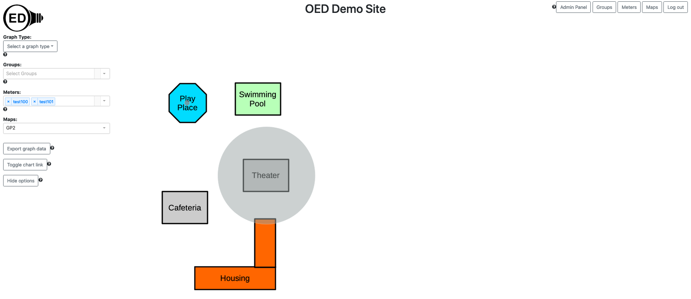

The following assumes you have loaded the test data into your development OED system. You can use other meter data if you prefer.
Please use the admin map help for information on how to load and calibrate a map. This page only describes the necessary details of the test map. You need to be logged in as an admin to complete these steps.
Use the sample Good Place map by downloading it. This is the map you upload into OED. We will call it "Good Place" and you can use that name in OED or some other name.
During the calibration step, you will use a mythical GPS coordinate system of (0-30, 0-50) which are real GPS values but not usual for a map. This large area works because we will make a perfect calibration with no error. This means the lower, left corner of the map has GPS coordinate (0, 0) and the top, right has GPS coordinate (50, 30). The Plotly grid has values of (0, 0) for lower, left and (300, 500) for the top, right. This means the coordinates are reversed for GPS (latitude, longitude) compared to the grid (x, y) and are a factor of 10 smaller. During calibration, click on three places on the map. In principle it does not matter where but I normally click in three spread out places on the map. When you do that, OED will tell you the grid coordinate you clicked on. As just explained, you need to reverse the coordinates and divide by 10. Thus, if you are told "input GPS coordinate that corresponds to the point: x: 277, y: 461 in this format -> latitude,longitude" then you enter "46.1, 27.7" for the GPS value in the box and submit. Repeat this 3 times and you should then see an error of 0% for both directions. If not, start over. If yes, then save changes to the database.
Next go to mater page to edit the meters for the desired GPS locations. These values will work where you don't input the location on map but that tells you where it will show up.
Note the three labeled "for another meter" are given in case you want to put other meters on the map. Note that test102 and test103 will give very large circles until we fix the size issue. If all went well, you should now see the following on the map page (I used a different map name due to ones already in my system).
{kind=link}